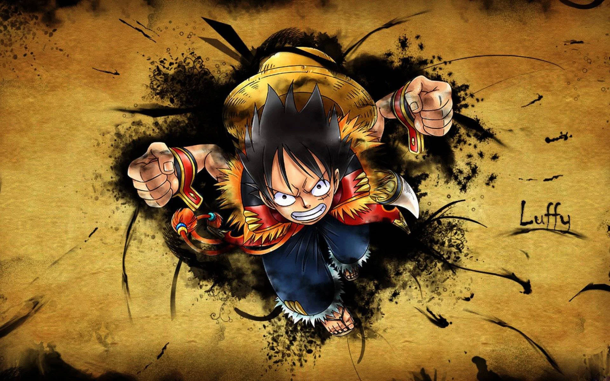
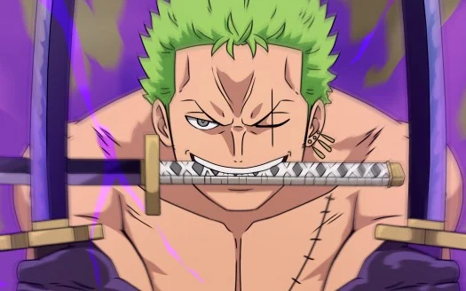
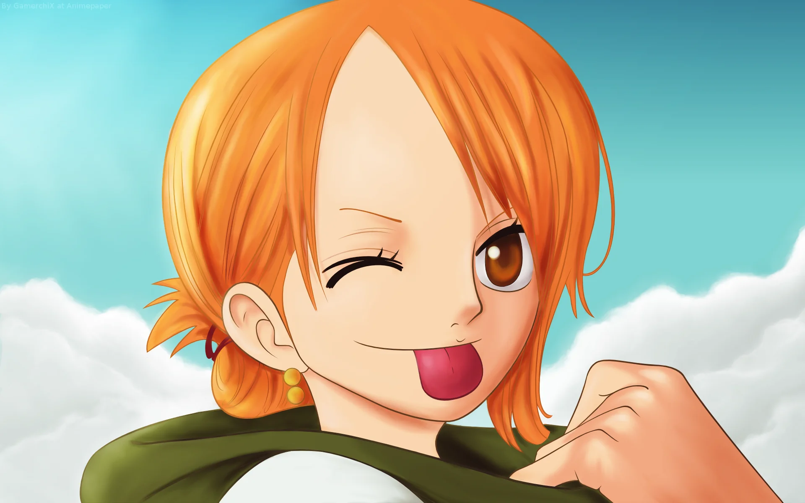
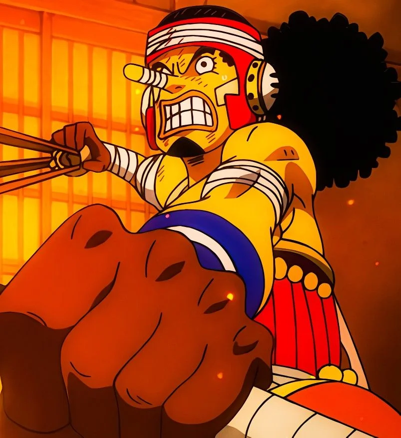
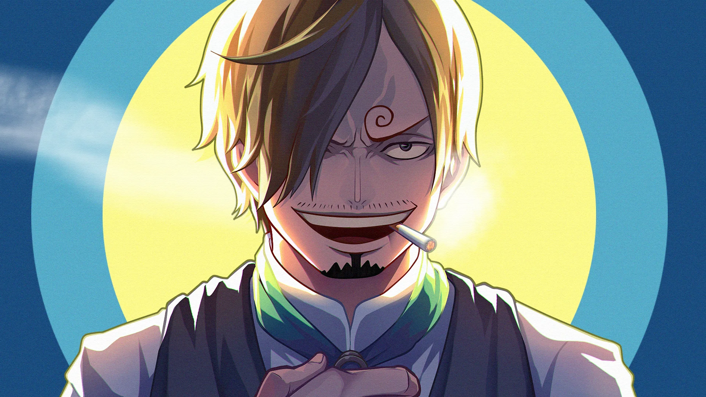
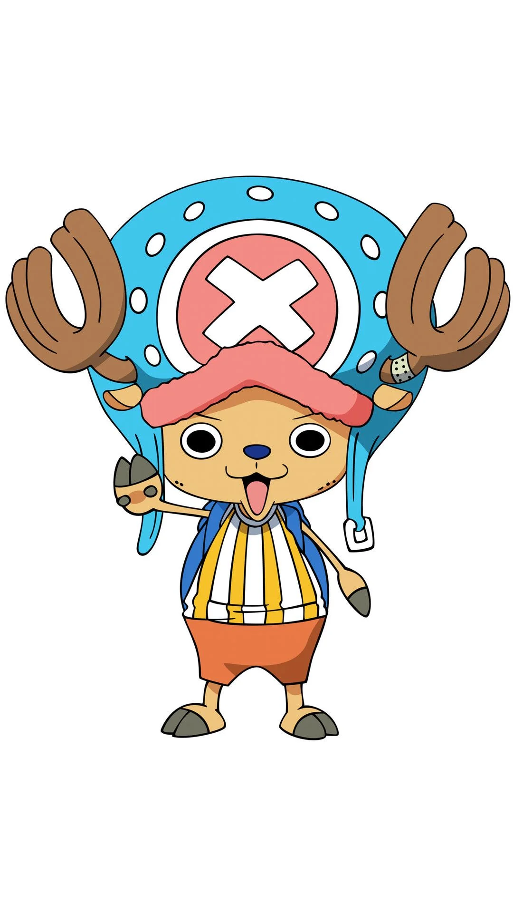
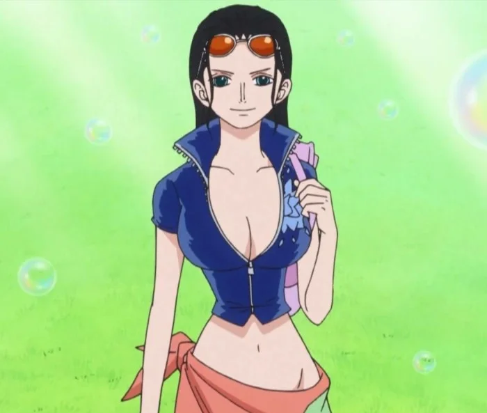
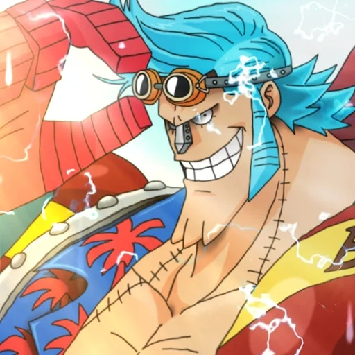
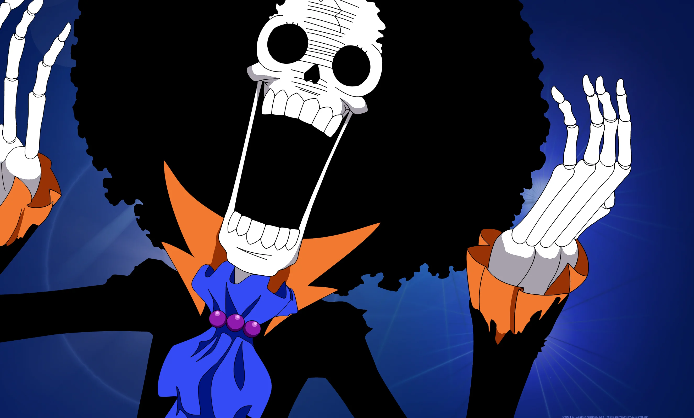
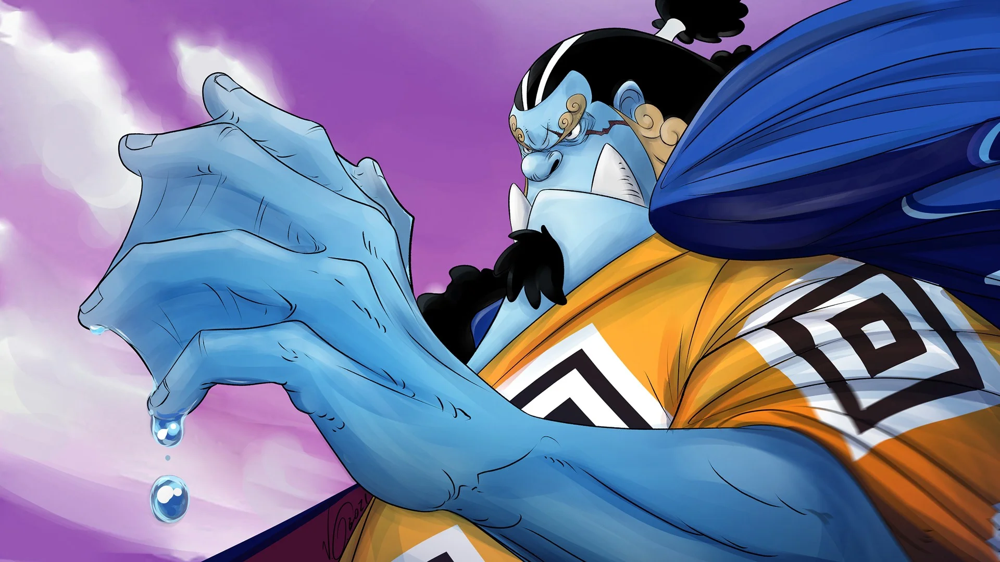

Benvinguts a la pàgina web dedicada al manga de One Piece. Aquí trobareu informació sobre els personatges, la història i una galeria d'imatges.
"One Piece" és una obra mestra del manga i l'anime que ha captivat públics de totes les edats a tot el món. Aquesta sèrie japonesa, creada per Eiichiro Oda, ha aconseguit un èxit massiu i una base de seguidors fervents. Amb una història complexa, personatges carismàtics i una exploració profundament interconnectada dels temes de l'amistat, la determinació i l'aventura, "One Piece" ha estat una presència dominant en el món de l'entreteniment des de la seva creació.
L'obra narra les aventures de Monkey D. Luffy, un jove pirata amb la capacitat de fer-se estirable com una goma després de menjar una fruita del diable, coneguda com a "Gomu Gomu No-Mi". Luffy, amb el somni d'esdevenir el Rei dels Pirates i trobar el tresor més gran del món, conegut com a "One Piece," recluta un grup heterogeni de personatges, cadascun amb les seves pròpies habilitats i objectius, per acompanyar-lo en la seva cerca. La sèrie destaca per la diversitat i profunditat dels personatges. Cada membre de l'equip de Luffy té una història de fons captivadora i un conjunt únic de habilitats, i molts tenen relacions amb altres personatges en la trama. A mesura que avancen en la seva recerca, els protagonistes es troben amb una gran varietat d'antagonistes, cadascun amb les seves pròpies motivacions i conflictes personals. Aquesta riquesa de personatges contribueix a la profunditat i complexitat de la història.
La història de "One Piece" és un viatge èpic a través d'un món ric i expansiu, ple de paradisos tropicals, illes voladores, ciutats flotants i misterioses runes. Els personatges exploren mars perillosos i enfronten-se a perills inimaginables mentre busquen el "One Piece". La història està plena d'aventures, acció, comèdia i moments emotius que fan que els lectors i espectadors se sentin atrapats en aquest món fantàstic. Un dels trets distintius de "One Piece" és el tema central de l'amistat i la camaraderia. Luffy i els seus companys són més que un equip; són una família, i la seva relació és el cor de la història. La seva determinació i sacrifici per ajudar-se mútuament fan que la sèrie sigui inspiradora i commovedora. L'obra d'Eiichiro Oda també aborda temes més profunds, com ara la justícia, la llibertat i la persecució dels somnis. A mesura que els personatges es mouen en aquest món divers i conflictual, han de prendre decisions difícils i enfrontar-se a les seves pròpies creences morals.
Amb més de 1000 capítols i una adaptació d'anime de llarga durada, "One Piece" ha deixat una empremta indeleble en la cultura popular. El seu èxit és testimoni de la narrativa envolvent d'Eiichiro Oda, la seva habilitat per connectar amb els lectors i espectadors, i la seva capacitat per crear un món ric i immersiu. En resum, "One Piece" és molt més que una sèrie de manga i anime; és una obra mestra que combina acció, aventura, comèdia i drames èpics, oferint una exploració profunda dels personatges i temes que ressonen amb públics de totes les edats a nivell mundial. És una obra que perdurarà com a llegat en la indústria de l'entreteniment i continuarà captivant nous públics en el futur.
One Piece té una gran varietat de personatges, des del protagonista Monkey D. Luffy fins als membres de la tripulació dels pirates del barret de palla. Dins dels protagonistes hi trobem:
Monkey D. Luffy: És el protagonista de la història i el capità dels Pirates del Barret de Palla. Té la capacitat de fer-se estirable com una goma després de menjar una fruita del diable i està determinat a esdevenir el Rei dels Pirates. Luffy és valent, innocent i sempre està disposat a ajudar els seus amics.
Roronoa Zoro: És el mestre de l'espasa i el espadatxa de la tripulació de Luffy. Busca esdevenir el millor espadatxa del món i porta tres espases. És conegut per la seva determinació i la seva promesa de mai perdre en combat.
Nami: És la navegant de la tripulació i una cartògrafa brillant. Inicialment, es va unir als Pirates del Barret de Palla amb l'objectiu de robar-los, però després es va convertir en una amiga inseparable de Luffy i els altres membres de l'equip.
Usopp: És un mestre dels embolics i la tripulació de Luffy compta amb ell com el seu tirador. És famós per les seves històries i mentides exagerades, però sempre està disposat a lluitar per protegir els seus amics.
Sanji: És el cuiner dels Pirates del Barret de Palla i utilitza les seves habilitats de combat amb les cames per lluitar. Té un gran respecte pel codi de conducta i mai lluitarà amb les seves mans, ja que les necessita per cuinar.
Tony Tony Chopper: És el metge de la tripulació i un rens ren-neu que ha menjat una fruita del diable, la qual li permet transformar-se en diferents formes. És un personatge adorat per la seva simpatia i la seva innocència.
Nico Robin: És l'arqueòloga del grup i té una gran obsessió per descobrir la història perduda del món. Les seves habilitats són crucials per descobrir nous secrets.
Franky: És l'enginyer i constructor de la nau dels Pirates del Barret de Palla. És conegut per ser un home cibernètic amb un cos fortament mecanitzat.
Brook: És el músic de la tripulació i un home que ha menjat una fruita del diable que li permet tornar a la vida després de la mort. És famós pel seu sentit de l'humor i les seves habilitats musicals.
Jinbei: És un peix-home i un expert lluitador amb el poder d'utilitzar l'aigua com a arma. S'uneix als Pirates del Barret de Palla més tard a la història i es converteix en el timoner de la nau.
One Piece és un manga que narra les aventures de Monkey D. Luffy i la seva tripulació mentre busquen el tresor més gran del món, el One Piece. L'història de "One Piece" és una epopeia de pirates, aventures, somnis i misteris en un món ricament detallat.
La història gira al voltant de Monkey D. Luffy, un jove amb el somni d'esdevenir el Rei dels Pirates. Luffy obté les habilitats de fer-se estirable com una goma després de menjar una fruita del diable. Després de formar els Pirates del Barret de Palla, Luffy inicia la seva recerca per trobar el mític tresor anomenat "One Piece".
Tot comença amb Luffy reunit-se amb els seus primers companys: Roronoa Zoro, Nami, Usopp i Sanji. Junts, naveguen per un món ple d'illes exòtiques, personatges únics i pirates rivals. En el camí, es troben amb governs totalitaris, organitzacions criminals i altres forces que tracten d'aturar-los.
Un dels temes centrals de la història és la cerca del "One Piece", una misteriosa recompensa que promet riquesa i poder il·limitat. La sèrie revela progressivament els secrets d'aquest tresor, la seva relació amb el misteriós Gol D. Roger, l'antic Rei dels Pirates, i l'impacte que té en la vida de molts personatges.
A mesura que la tripulació de Luffy viatja a través del Grand Line, una regió perillosa i plena de misteris, s'enfronten a pirates notoris, agents governamentals i altres adversaris, incloent els membres dels "Shishibukai", un grup de pirates extraordinàriament poderosos.
La història també gira al voltant d'una antiga guerra civil anomenada la "Gran Guerra" que va tenir lloc fa molts anys. Aquesta guerra va donar lloc a la creació de diverses organitzacions i els Marines, una força militar que tracta de mantenir l'ordre i frenar els pirates. La història de la Gran Guerra es relaciona amb el passat d'alguns dels personatges principals.
A mesura que avança la història, es revelen detalls importants sobre els passats i les motivacions de molts personatges, i es desenvolupa una relació profunda entre ells. Els protagonistes continuen creixent i evolucionant, i la seva amistat és un dels pilars centrals de la sèrie.
En resum, "One Piece" és una saga èpica que combina aventura, acció, comèdia i drames en un món ric i vibrant. La història està plena de misteris, traïcions i somnis, i els personatges es troben en una recerca constant per aconseguir els seus objectius i trobar el significat dels seus somnis en aquest món ple de perills i meravelles. La història continua més enllà de la meva data de coneixement, amb molts més episodis i aventures per descobrir.
Explora una col·lecció d'imatges i il·lustracions de One Piece. Veureu imatges dels personatges, les batalles èpiques i les escenes més emocionants de l'obra.